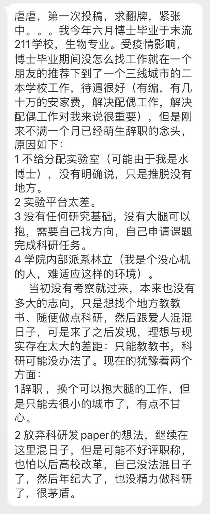

原来211末流博士都能找到大学老师的工作。我还以为就是二本也要前几名的学校毕业的呢。 //@马少平THU:2、3肯定能想到，给实验室这个一般也不具备吧？也许生物不太一样，没实验室就无法工作。//@程序员邹欣://@是居居不是猪猪嚄:这不是挺符合你的预期吗？混混日子@PITD亚洲虐待博士组织:#pitd互助# 生物专业，博士毕业在朋友推荐下来到三线城市的二本学校，有编，安家费几十万，同时解决配偶工作，条件很香，但是刚来不满一个月就萌生了辞职的念头… 